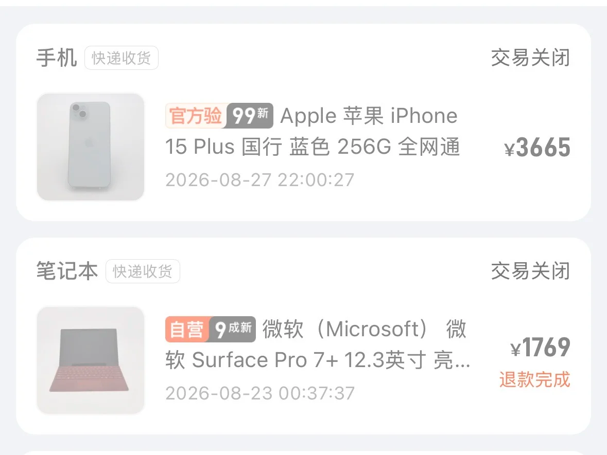
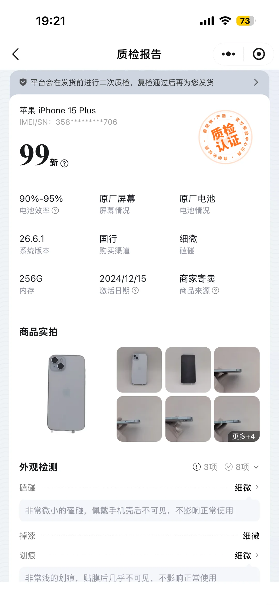
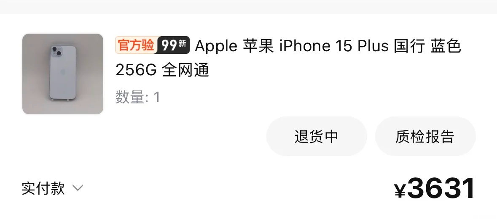
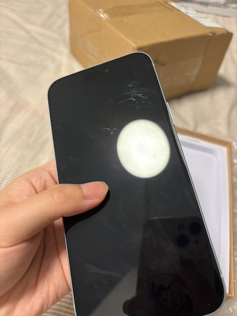

大概 23年、24年的时候，在爱回收买过两次 iPad，体验还不错；
但是最近几天连续遇到了非常让人失望的情况；
首先是买了一个二手的 Surface Pro 7+，等了一天平台说复检不通过、不能发货、取消了订单；
然后买了一个二手的 iPhone 15 Plus，等了一天，再次遇到了平台复检不通过，不能发货、取消了订单；

我还发小红书说：
别用爱回收买二手了，浪费时间
连续两次买东西，精挑细选之后
爱回收说设备没有达到发货标准
就不发货了
直接退订单
不能发货为什么要摆在列表里
紧接着，在小红书上，爱回收的客服竟然根据我发布的订单信息、锁定到了我的手机号码，然后给我打电话，说给我 100 块钱，让我把小红书删了。我没要钱，并且又发了一条帖子：
爱回收的复检不通过意味着什么
意味着你看到的严选二手的商品列表信息，都可能是假的；你看到一个个参数很漂亮，其实根本不存在；假如你发现了新价比高的设备，商家可以用复检不通过来阻止你，消费者完全被动；
复检机制看似是在保护消费者权益，实际上是一种懒惰不作为，既然复检不能通过，初检是怎么通过的？初检人员犯的错，为什么要消费者承担后果？谁来惩罚初检人员？是不是意味着可以先随便填一些漂亮参数上架、有用户花钱下单了再具体看情况？把猪骗进来杀？
对于传统商城来说，商家会上架过期的牛奶吗？有人买了结账之后发现牛奶过期了？为什么爱回收的商城可以？
当天晚上凌晨 4 点，我收到了一个 “骚扰电话”，不知道是哪里来的号码反复给我打电话；我也不知道这两件事情之间有没有明显的关联。
但是还没完，因为我想买手机，我就不死心，再次在爱回收下单 iPhone 15 Plus，这次复检通过了，但是收到货就死心了。


爱回收的商品页面写着 99 新、细微划痕。可实际上非常严重：

这个是比较清晰的一张，在灯光下，能看到非常明显的划痕。
我发帖的内容是：
对爱回收彻底失望了
本来没死心，因为23年24年买过二手ipad，没有发现明显问题、体验还不错；
结果今年先是连续遇到两次复检不通过耽误我时间，我后来又下单了一次；
这次收到货后就死心了；质检写的99新、屏幕划痕和磕碰非常细微；
结果打开一看这帮人是不识字吗，什么叫99新，什么叫细微；
这屏幕划痕这叫不可见？这种手机能按照99新卖？
刚打开以为是手机屏幕脏了，没想到就是屏幕磕碰划痕严重到这种肉眼可见的地步
这个价格很便宜吗？
我猜一定是今年以来的以旧换新大量回收了低质量手机、服务质量下滑了，体量大了之后服务跟不上了
所以以后不要在爱回收上买东西，这个是最近几天折腾后得到的教训。
当然，于此同时，我也明显感觉到了自己最近的低谷和消费降级。
毕业后的第一年，2020年 4月，我没有钱，换不起手机，在拼多多上下单了百亿补贴后的 iPhone SE2，实付 3400。当时考虑了很久；第一次用上了 iPhone。
2022年 6月，分 12 期下单了 iPhone 13，实付 5500，有点忘了当时有没有仔细考虑，但是记得自己并不珍惜这个手机、不带壳不贴膜随便摔；没那么在乎这点钱了；
2023年 9月，出于生日礼物的原因，花 7000 块钱在苹果实体店买了新款的 iPhone 15，送给女朋友；虽然有点压力，但是没有明显感觉；
相比 2020年，6年后的今天，我回到了没有钱的状态，换不起新手机，开始考虑 3600 的 iPhone 15 Plus 二手手机；开始考虑 4000 块的 iPhone 17e;
iPhone 17e 没什么不好，我又不是那么需要拍照、至于刘海、我的电脑也是刘海、这没什么不好；虽然从 iPhone 15 换到 iPhone 17e 几乎没有硬件升级甚至屏幕和刘海还倒退了；尽管 iPhone 17e 的目标群体是 iPhone SE 3 而不是普通数字版；这没什么不好；
回顾了手机的购买历史，顺便看一下电脑的购买历史。
2016年 2月，出于上大学需要电脑的目的，第一次花 3500 元，买了一台华硕笔记本电脑；
2019年 10月，毕业后没几个月，因为买不起苹果电脑、而旧的华硕电脑太老了、工作给的台式机也不好用，所以花 4000 元、买了一台华为 Honor 的 Linux 版本的电脑；当时热衷于折腾 Linux 系统；
2021年 7月，因为入职新公司，并且公司给报销一定金额，所以买了 11000 的 Macbook Air M1，很开启，第一次用上了 Mac 电脑，虽然只有 13 寸的屏幕、算是比较低的配置；
2025年 2月，忍不住买了 15000 的 iMac M4 电脑，24寸，台式机，屏幕真的大，配置真的高，32 GB 内存。分期 12个月，当时虽然觉得不便宜但是没觉得负担不起。可惜今年 3月份左右按照二手价在闲鱼卖了，卖了 10000 块钱。当然我知道我卖的价格并不高，而且我平时自己用很小心，没有任何磕碰。但是确实不想要这种台式机了，它限制了我的工作场所必须在电脑桌前，而不能在咖啡店或者别的地方。而且 iMac 的市场很小，需求量远低于笔记本。折价 5000 就折价 5000 吧。哪怕是今年 3 月份，都没觉得这 5000 块钱有多少。
2026年 4月，买了 Macbook Air M4，15寸，花了 8500 块钱。当然，这又是一个雷点，今年 4月份，苹果刚发售了 Macbook Air M5，我为什么买了 M4？因为 M5 没货，需要等接近一个月，我等不了。也就是今年买电脑的时候，我感觉到了自己的消费力下降，毕竟 2021 年都在买 1万块钱的电脑，而现在 2026年了，还只能买 8500 的电脑，并且和 5 年前一样，内存同样是 16 GB 的，这其实有点拮据。但是实在没钱加 1500 升级到 24 GB 内存。
就是这样，一个完整的针对数码产品的消费能力曲线，从不足到有提升再打回到不足。现在依然用着最低配的 Macbook，买了 SE 系列的 iPhone 17e。
回到一开始的主题，不要买二手手机、二手电脑，不要买。中间的坑和磨损很多。